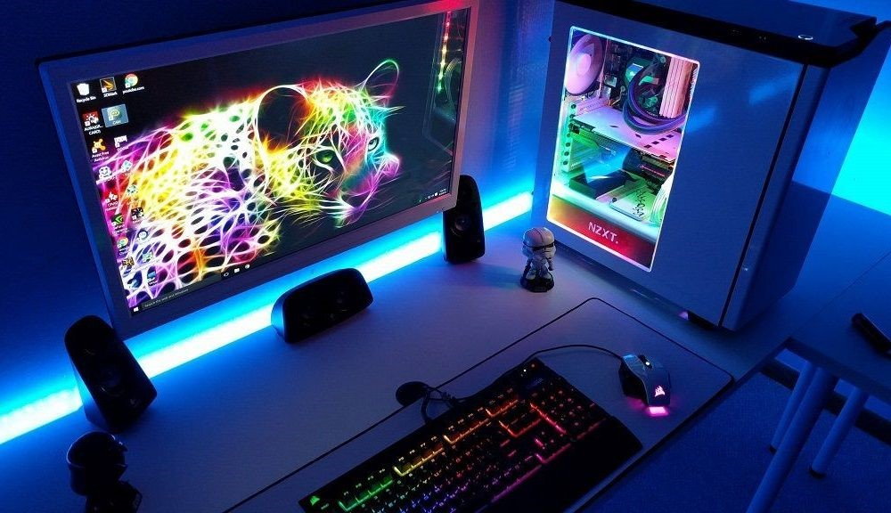

Como ya hemos visto en el párrafo anterior, sabemos que los ordenadores gaming están enfocados en la práctica de videojuegos y que suelen tener mayor presencia entre quienes se dedican a esto de manera regular. Ojo, no hace falta que seas un jugador profesional para contar con un ordenador gaming, puesto que cualquiera puede tener acceso a las piezas y componentes gaming necesarios. Por supuesto es evidente que este tipo de máquinas gaming se encuentran principalmente en la escena profesional, donde la precisión y el tiempo son valores fundamentales. Es por esta razón que si gustas de sacar el máximo rendimiento a tus sesiones de gaming y has llegado a un punto en que ese milisegundo en el disparo o la cantidad de frames que ves cambiaría el resultado de una partida, debes comenzar a plantearte construir tu propio ordenador de gaming.
